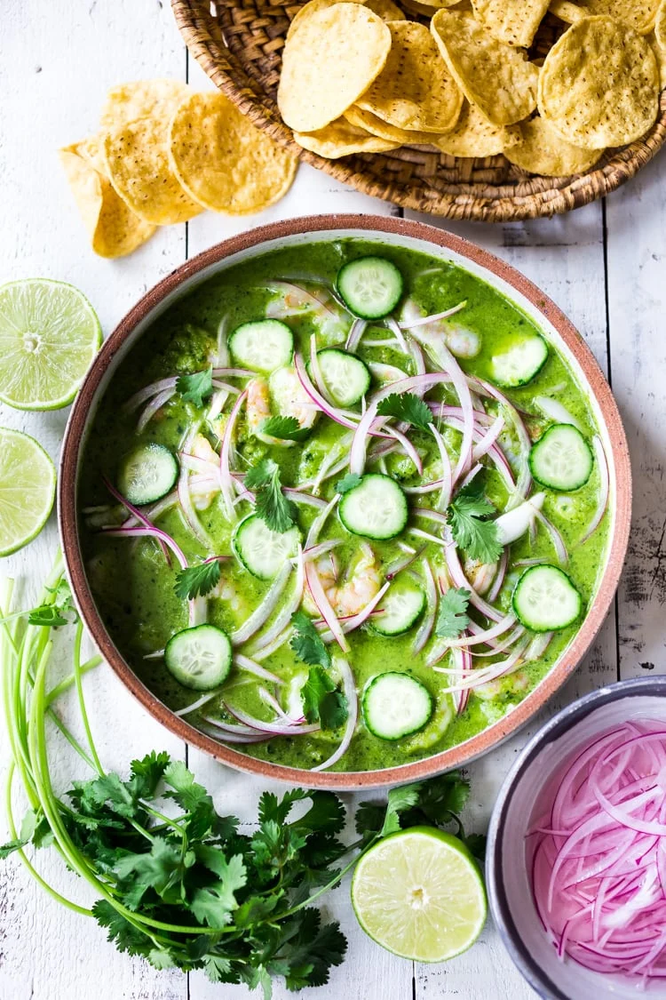

Aguachile Recipe

Description
One of my favorite things to eat in Mexico, along with ceviche, is Aguachile. Ceviche and Aguachile are similar in that both are fish or shrimp, “cooked” in lime juice. But Aguachile takes it a step further by adding blended chiles and cilantro to the mix, giving it this vibrant green color and spicy deliciousness!
Ingredients
- Raw Shrimp
- Limes
- Red Onion
- Salt
Steps
- Slice the shrimp in half (lengthwise) and remove any veins or tails. Place in a shallow serving dish in one layer if possible. Squeeze with enough lime to cover the shrimp- which will cook the shrimp, turning them slightly pink. Sprinkle with a little salt. Turn shrimp over as needed to cook both sides in the lime juice – this will take about 20-30 minutes.
- Thinly slice the red onion, place it in a bowl and season generously with salt. Pour just enough water to cover the onions. Optional: Add a splash of white vinegar to enhance and bring out the red color of the onion.
- Make the Aguachile Marinade: Place the ingredients in a blender and blend until smooth, for a full minute, scraping down sides as necessary. If you have excess lime juice marinating the shrimp you can use some of this in the blender to make your ½ cup.
- Pour the aguachile marinade over the shrimp and toss to coat. Drain the onions and scatter them over top, mixing them in slightly. Add cucumber or radishes if you like. Refrigerate 30 minutes or up to 4 hours. This is best served cold!